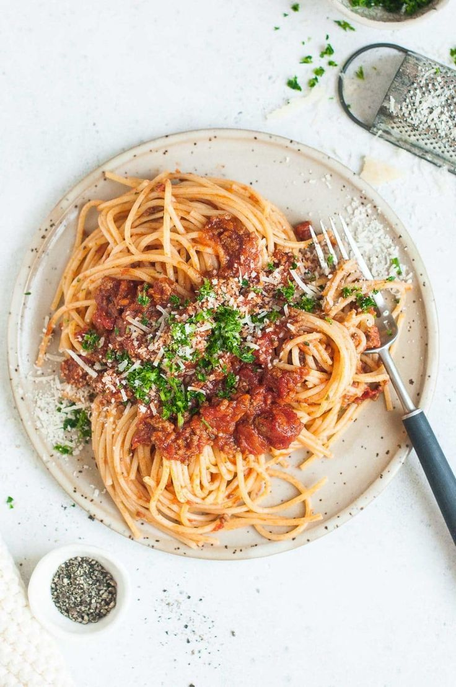

Spaghetti Bolognese
Our classic favorite pasta with minced meat, also known as Bolognese, is one of the most famous dishes of Italian cuisine.
View RecipeOur classic favorite pasta with minced meat, also known as Bolognese, is one of the most famous dishes of Italian cuisine.
View RecipeFilled are foods of many peoples that usually consist of vegetables and a filling of rice (many call them "orphans") or meat or a mixture of the two ("married").
View RecipeIn the mecca of confectionery, Paris, a famous dessert that has been driving young and old crazy for years now is the eclair.
View Recipe